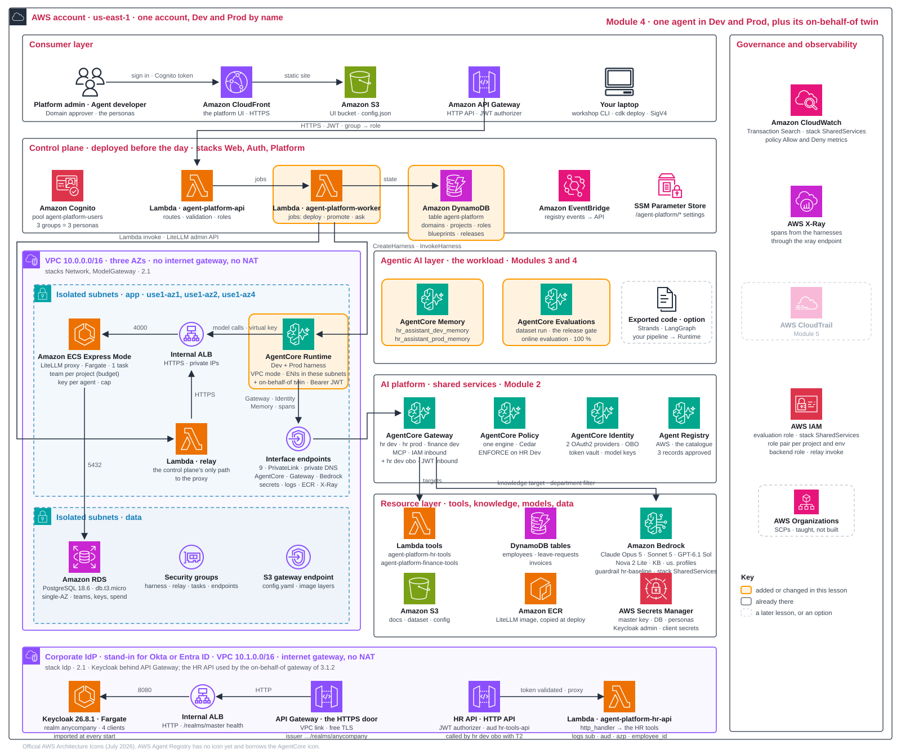

From a shared platform to a released agent
Module 3 left the HR assistant as a reviewed blueprint and the tool plane proven against it. Before it can run, someone has to grant it what it needs, and before it can reach Prod, someone other than its builder has to accept it. This module follows that path in the order each step depends on: discover the approved resources and record exactly what a consumer requests; scope and cap the model access the agent will use; review isolation against the evidence collected so far; deploy, evaluate and iterate in Dev; and finally obtain independent approval and promote the accepted version.
| Step | Persona | Output |
|---|---|---|
| Discover and request access | Platform admin; Agent developer | Approved catalogue records, a discovery result per persona, a recorded access request and decision; discovery proven not to grant invocation |
| Model permissions and caps | Agent developer; Platform admin | A Dev key restricted to one model; normal, guardrail and wrong-model results; a budget refusal and restoration; workshop inventory confirming the shared objects |
| Isolation review | Platform admin with the workload owner | Identity, network, tool, data, memory, metadata and telemetry boundaries reconciled against evidence |
| Deploy, evaluate, iterate | Agent developer | Blueprint v1 BLOCKED and v2 PENDING_APPROVAL with their scores; the on-behalf-of agent answering for the employee |
| Approve, promote and publish | Domain approver | Separation of duties proven; the approved version live in Prod; seeded traffic; recovery ownership |
Run 1 of workshop apply 6 takes 12 to 15 minutes and needs the Dev cap restored at the end of the key-and-cap step. It starts at the beginning of the deployment step, after the isolation review; work through that step's explanations and decisions during the run.
Discover and request: what a request must name 5 min
Before anyone builds another tool, find the approved one. Approve the catalogue records that Module 2 left pending, discover them as different personas, then record exactly what a consumer requests and who decides.
A useful discovery record tells a consumer what the asset does, who supports it, which version was reviewed and how to request invocation access. A useful access request then names exactly what is wanted, so its owner can decide.
| Request field | Example |
|---|---|
| Resource and version | Catalogue record hr-assistant-tools version 1.0; its endpoint, the HR Dev gateway; the tool hrtools___get_leave_balance |
| Requester, project and environment | Finance Operations, project invoice-helper, Dev agent role |
| Operation and data scope | Read only; which employees' balances, and why |
| Owner who decides | People Operations for the tool and its data; the Platform admin for the gateway permit and IAM change |
| Decision and evidence | Granted, refused or narrowed, with the reason; the resulting permission, never the catalogue label |
Keep three things apart. Catalogue approval by the Platform admin makes a record discoverable; it is a label and grants nothing. An owner's grant is a change to the invoking role's IAM and the gateway's Cedar permits. Invocation is decided by the endpoint every time. The implementation has no access-request workflow: a grant here is a recorded decision, and applying it would be a reviewed IAM and policy change by the Platform admin, which this lab does not make.
| Choice | Use when | Trade-off |
|---|---|---|
| Reuse an approved dependency | Its schema, data scope, support owner and version fit | Less maintenance, but another owner controls changes |
| Publish a new version | The workload needs different behaviour the dependency owner accepts | Extra review and consumer migration; keep the previous version until consumers move |
| Keep discovery within the domain | Metadata is sensitive or support is limited | Smaller reuse audience; widen only after reviewing visibility and permissions |
Pin the version that was verified. Discovering a newer approved record does not establish compatibility; a dependency refresh needs a new manifest and applicable evidence.
Approve, discover, and prove discovery is not invocation 15 min
- screenAs Agent developer, open Catalogue and filter on Pending approval: the two records still pending,
kb-hr-policiesandmodel-claude-sonnet-5, are listed, but you cannot change their status (the API's status route accepts only the admin, as you saw in Module 2's registry setup). Search for "HR policy": nothing is found yet, becauseDRAFTandPENDING_APPROVALrecords are not searchable. - screenSwitch to Platform admin: every persona can read the catalogue, but only the admin may change a record's status. In Catalogue, filter on Pending approval and approve the two records still pending from
workshop apply 4(hr-assistant-tools, the MCP server of the HR Dev gateway, was approved in Module 2), one at a time: select the record (its details open in the split panel), choose Set status, then Approve, and confirm in the dialog with an optional reason:kb-hr-policies(the HR policy knowledge base) andmodel-claude-sonnet-5(the model alias named in your record). Approved records become searchable. If the screen is unavailable,workshop approve catalogueapproves every pending record from the command line; here that is the same two. - screenSwitch back to Agent developer, then to Domain approver, and search again for "HR policy" and "model":
kb-hr-policiesandmodel-claude-sonnet-5are now found besidehr-assistant-tools. Allow a short delay for the search index. Open them:kb-hr-policiesnames the knowledge base and itsdepartmentfilter; the model record names the alias and the model gateway base URL. Neither carries an invocation credential. - commandThe knowledge base is reached as the gateway tool
hrkb___Retrieve. As in Module 2's coding-client checks, discovery grants nothing:uv run workshop call --as finance-dev --gateway hr-dev retrieve "remote work"→REFUSED before any policy: HTTP 403 from IAM, whileuv run workshop call --as hr-dev retrieve "remote work"returns Remote Work Policy passages. Invocation is decided by IAM at the gateway and by Cedar in it. - recordWrite one access request using the fields above, for example Finance asking to read HR leave balances, and the owner's decision. Record why approving the catalogue record did not answer it, and which IAM statement and Cedar permit would implement a grant.
- recordComplete the discovery inventory: for HR, agent → gateway
hr-assistant-dev-gw→ targetshrtoolsandhrkb→ knowledge base and filter; for Finance, gateway →fintools. Add owner, version, lifecycle state (approval, deployment and publication separately), intended audience and channel. Return to the IDE acceptance matrix from Module 2 and mark its executable rows with these results.
Hiding or deprecating a record does not revoke credentials, stop a runtime or update consumers' pinned dependencies; record who can remove invocation access. A Dev candidate remains unpublished until it is approved and promoted at the end of this module. With the consumer's request recorded, the next step scopes the one resource every agent needs: its model key.
Scope and caps: key, cap and restoration 5 min
Discovery told the developer which model alias is approved; it did not give the agent a way to call it. Issue the HR agent's Dev key, restricted to one model and capped, and prove each control: a normal answer, a guardrail stop, a wrong-model refusal, a budget refusal and restoration. Module 2 chose the route and the spend design; this step applies it to one project. Two scopes are enforced: the project team (5 USD per 7 days, 200,000 tokens and 200 requests per minute, set at the control plane in Module 2) and the agent key (1 USD per 7 days per agent, environment and model). Caps follow keys, not users.
- The raw key is shown once.
workshop apply 5prints it in shortened form while it runs its probes, then stores it in the token vault. Do not capture, copy or share it, and keep that output out of evidence; the harness fetches the key itself under its own workload identity. - Spend is asynchronous. The proxy writes spend in batches about every 10 seconds; the Keys tab and the dashboard lag by about 10 to 15 seconds. A cap lowered below spend that has not been written yet still lets the next call through.
- Restoring a cap does not reset spend.
workshop cap --dev restorewrites the record's cap back; the spend already counted stays until the key's period resets. - The cap helper is HR-only.
workshop capchanges the HR project's Dev key for the model in your record; there is no Finance key.
Make a key and cap it 15 min
The proxy has run since the foundation in Module 2. This lab adds its governed Dev key; the catalogue records were approved above. CLI proxy calls use the relay.
- recordSet the key cap in
design-record.yaml. - command
workshop apply 5: it first prints the governance summary (the four aliases, each with thehr-baselineguardrail, the policy engine, the gateways) and the project team's spend against its budget. It then creates the Dev key, capped asmodule_5.inputs.key_capsays and restricted to the model you chose in Module 2 (modelundermodule_3.inputs), and makes three calls with the raw key before putting it away: a normal question, where you read the answer, the token usage and the cost headerx-litellm-response-cost; a question about suing a manager, which the guardrail stops withfinish_reason=content_filterand the blocked message; and a call with the project's other allowed alias,gpt-6-1-sol, which the proxy refuses with HTTP 403 because the key may use one model only. Only then does it store the key in the AgentCore Identity token vault (this creates the key's API key credential provider), register that provider with the platform and adopt the key, which now appears in the project's Keys tab, and wait for the first spend to be recorded. On a re-run the key and provider already exist, so the command reuses them and skips the three calls. - command
workshop cap --dev low: as the Platform admin it lowers the Dev key's cap to half of what the key has spent so far (never more than 0.01 USD; 0.01 when no spend is recorded yet) and makes one more call through the proxy, which refuses it before any model runs:OK BUDGET_EXCEEDED, gracefully: HTTP 422, Budget has been exceeded! Key=… Current cost: …, Max budget: …. The text after the comma is LiteLLM's own wording (its error type is the lower-casebudget_exceeded);BUDGET_EXCEEDEDis the platform's code for the same refusal, whichworkshop askprints and the Playground shows as its "Spending cap reached" alert once the agent is deployed. If the call still passes, the spend the command read had not been written yet (the proxy writes spend in batches every 10 seconds), so the cap it set is still above the real spend: run the command once more. Thenworkshop cap --dev restorewrites your record's cap back before the deployment. - command
workshop inventory: verify the shared platform resources. - recordCheck the
module_5my_callentries you wrote for the model route and the registry in Module 2 against what you observed.
# workshop apply 5, first run (lines shortened; numbers vary)
== governance: approved models, guardrail, engine, gateways
model claude-opus-5 guardrail {'id': '...', 'version': '...', 'name': 'hr-baseline'}
model claude-sonnet-5 guardrail {'id': '...', 'version': '...', 'name': 'hr-baseline'}
model gpt-6-1-sol guardrail {'id': '...', 'version': '...', 'name': 'hr-baseline'}
model nova-2-lite guardrail {'id': '...', 'version': '...', 'name': 'hr-baseline'}
guardrail hr-baseline policy engine True gateways [('hr-assistant', 'dev', 'ENFORCE'), ...]
== the project's team in the model gateway
team hr-assistant: spend 0.0 of 5.0 USD per 7d, tpm 200000, rpm 200, models ['claude-sonnet-5', 'gpt-6-1-sol'], keys 0
== the Dev key for claude-sonnet-5: cap 1.0 USD per 7d
created key hr-assistant-dev-claude-sonnet-5: cap 1.0 USD per 7d, restricted to claude-sonnet-5; raw key sk-1a2b...9z8y (shown once)
hashed key id 1a2b3c4d5e6f7a8b... spend 0.0 of 1.0 USD, resets ...
== first calls through the model gateway with the raw key
the proxy is private (internal load balancer): the call goes through relay agent-platform-model-gateway-relay, a Lambda inside the VPC that forwards the HTTP request as is; the key travels in the Authorization header, the relay adds nothing
[2.6 s] An HR assistant can help an employee with ...
usage 25/48 tokens; cost header x-litellm-response-cost: 0.00058
guardrail: finish_reason=content_filter -> "Sorry, I can't help with that topic. Please contact HR directly."
OK gpt-6-1-sol with this key -> HTTP 403: the key is restricted to claude-sonnet-5 (the team allows gpt-6-1-sol, the key does not)
== store the key in the AgentCore Identity token vault
credential provider arn:aws:bedrock-agentcore:us-east-1:...:token-vault/default/apikeycredentialprovider/litellm-hr-assistant-dev-claude-sonnet-5
== the platform adopts the key
adopted: {"alias": "hr-assistant-dev-claude-sonnet-5", "env": "dev", "model": "claude-sonnet-5", "maxBudget": 1.0, "budgetDuration": "7d", "status": "active"}
== spend
key hr-assistant-dev-claude-sonnet-5: spend 0.00058 USD of 1.0
team hr-assistant: spend 0.00058 of 5.0 USD per 7d
OK model access built
next: `workshop cap --dev low` (the cap drops below the spend and one more call is refused with BUDGET_EXCEEDED), then `workshop cap --dev restore`
3 catalogue record(s) wait for approval: approve them on the Catalogue screen as Platform admin (`workshop approve catalogue` is the fallback)
then `workshop inventory`: platform complete
look: Keys tab: https://.../domains (the project's Keys tab: spend against cap)
look: Catalogue screen: https://.../catalogueThree results to notice. The cost header prices one call, and that spend is what the Keys tab and the caps count. The guardrail answer comes back as a normal completion with finish_reason=content_filter, so an agent can handle it gracefully instead of failing. The wrong alias is refused before any model runs, because access is a property of the key, not of the caller.
Dashboard spend updates about 10–15 seconds after a call.
Read the three refusals as different controls: the guardrail answers normally with finish_reason=content_filter; the wrong alias is refused with HTTP 403 because model access belongs to the key; the cap is refused with HTTP 422 BUDGET_EXCEEDED before any model runs. Restore the cap before the deployment: Run 1 needs it.
What now exists. Every shared object is in place: the catalogue with its approved records, the policy engine and its policies, four gateways (the three of the access fixture, where the caller is an IAM role, and the on-behalf-of gateway hr-assistant-dev-gw-obo that stands beside HR Dev for callers with a token from the corporate IdP), the agent and gateway role pair of each project and environment, the model-gateway team, the Dev key, and three credential providers in AgentCore Identity: the API-key provider that holds the Dev key, created in this step, and the two OAuth2 providers kc-hr-agent and kc-hr-obo-gateway from the foundation. workshop inventory lists the registered part of this by name and ends with platform complete: registry, policy engine with policies, gateways, roles, team and key exist; no agent yet. Two things it does not show: the on-behalf-of gateway, which is deliberately not registered with the control plane, and the two OAuth2 providers, because the command lists API-key providers only. Both are visible in the AgentCore console. The deployment below adds the first running agent.
Your design record: module_5
module_5:
inputs: # read by: workshop apply 5
key_cap: {usd: 1.00, period: 7d} # the Dev key for the agent's model
decisions:
model_access: {workshop: model-gateway, my_call: "..."} # LiteLLM
spend_control: {workshop: hard-caps, my_call: "..."} # team budget + key caps
catalogue: {workshop: agent-registry, my_call: "..."} # manual approval, a label
processing_location: {workshop: geographic-profiles, my_call: "..."} # us. profiles; the SCP side is 1.4The input is read by workshop apply 5; the decisions were made in Module 2 with the model route (model access, spend control, processing location) and the registry (catalogue).
Isolation review: shared or dedicated, and what enforces it 5 min
The agent now has a capped key and a gateway it may call. Before widening anyone's access or deploying, reconcile every boundary the HR workload relies on with the evidence you actually collected, and name the gaps for the intended audience.
Sharing reduces cost and maintenance; every shared runtime, tool, store and telemetry view needs a boundary a reviewer can identify. The layer table of Module 1 is the checklist; this review fills it with evidence. A namespace, a UI filter or a session label only names a scope: record the permission, trusted identity binding, data filter or service isolation that enforces it.
Review the HR workload, layer by layer
| Layer | Control in this workshop | Evidence collected | Gap or production step |
|---|---|---|---|
| Identity | Cognito groups mapped to roles; Keycloak for employees; IAM role pairs per project and environment | Developer refused POST /domains (Module 2, foundation); agent role refused both tool Lambdas (Module 2, control plane) | Switch persona is a workshop shortcut; roles trust the account root; release-approval separation is proven at approval |
| Network | Isolated subnets, interface endpoints, no internet path; relay for outside callers | Route tables and endpoints (Module 2, foundation); health call through the relay | Single-AZ database; no endpoint policies; the web UI and API have no WAF |
| Gateway and tools | Per-project gateways with IAM inbound; Cedar permits and a forbid rule | Finance role HTTP 403 on the HR gateway and HR role 403 on Finance's (Module 3, both gateway probes); LOG_ONLY tool error; ENFORCE -32002 (Module 3, HR gateway) | Only HR Dev enforces; the empty tool allow-list allows every tool; the on-behalf-of gateway is not attached to the policy engine |
| Data | Knowledge filter pinned at the target; HR API JWT authorizer | Expense policy never returned to HR (Module 3); the HR API logged the employee's sub, aud and azp (Module 3) | The HR tools trust the employee_id argument: identity propagation is proven, row-level security is not |
| Memory | One memory per project and environment; 30-day events | Created at deployment below; read back in Module 5 | The caller supplies the actor id; bind it to a verified identity |
| Catalogue metadata | One IAM registry; every persona reads approved records through the platform API | Discovery as several personas and the 403 on invocation (discovery step above) | No per-tenant metadata boundary; approval is a label, not a deployment gate |
| Telemetry | CloudWatch IAM controls trace access; full synthetic content | Inspected in Module 5 | No metadata-only or redaction policy; readers and retention per source not defined |
Activity: review one boundary all the way through 10 min
- recordChoose one row. Trace consumer identity → runtime and session → tool → data and state, then name who can read its metadata and telemetry. Use the evidence you already have; this is a review, not another access-testing lab.
- recordWrite the decision: requirement (for example, an employee must not read another employee's leave balance), selected boundary, enforcement, evidence to reuse, trade-off, the condition that would force a dedicated resource, and the response if evidence is missing (return to the tool owner; keep wider availability pending).
- recordAdd the failure boundary: who handles a shared-tool outage, a noisy neighbour, a revoked tenant or data retained after retirement. Security isolation and capacity isolation can need different controls.
- recordMark each control verified, proposed or gap, with its configuration reference and owner. For the intended audience of the HR release (People Operations employees through the platform), state whether the gaps block it.
Deploy, evaluate, iterate: from platform to workload 10 min
With access granted, spend capped and the boundaries reviewed, the HR blueprint can run. Start Run 1 now; it renders and deploys the blueprint while you read on. Switch from Platform admin to Agent developer: the AgentOps loop deploys the blueprint to Dev, lets the release gate block a planted regression, fixes the prompt and evaluates again, then runs the employee-aware variant once the runtime exists.
Building a workload takes five steps:
- Build: write a blueprint.
- Deploy: render it for Dev.
- Evaluate: compare scores with thresholds.
- Release: obtain Domain approver approval.
- Promote: render the approved blueprint for Prod.
Module 3 explains the blueprint and the six platform steps from Write to Promote; this section runs Validate, Render, Deploy and Gate.
The agent that acts on your behalf
The Dev and Prod harnesses are called with SigV4 (Playground, evaluation, workshop traffic) and reach their tools as the project's agent role: the service identity of D2.10. A SigV4 call carries no employee, and AgentCore propagates no per-user identity downstream from it, so there is nothing to exchange. The on-behalf-of chain (D3.1, D3.5) therefore gets a harness of its own. workshop apply 6 renders the latest blueprint for Dev once more and patches three things:
- Inbound: a JWT authorizer that trusts the realm anycompany and accepts the audience hr-agent.
- Tool gateway: the on-behalf-of gateway of Module 3, called with OAuth TOKEN_EXCHANGE through the provider kc-hr-agent for the audience hr-obo-gateway.
- Memory: off. One question needs none, and a memory would need an actor id per employee.
The result is hr_assistant_dev_obo, the twin of hr_assistant_dev: the same model alias, prompt, limits and agent role, plus one inline policy on that role, obo-token-exchange. The policy does two things: it lets the role ask AgentCore Identity for the exchange through kc-hr-agent, and it lets the twin fetch its model key from the token vault under its own workload identity, harness_hr_assistant_dev_obo-*, which the role template does not cover because it names only the Dev harness's identity, harness_hr_assistant_dev-*. The twin is called over HTTPS with Authorization: Bearer and the employee's token T0, not with a signed request. Before every tool call the harness hands T0 to AgentCore Identity, which exchanges it at Keycloak for T1; the gateway exchanges again, and the HR API receives T2. The harness code never sees a secret or an exchange. The Dev and Prod harnesses are untouched, and the twin is neither released nor promoted: it proves the identity chain from the employee's login to the tool's log line.
| Dev harness hr_assistant_dev | On-behalf-of twin hr_assistant_dev_obo | |
|---|---|---|
| Who may call it | An IAM identity allowed to invoke it, with a SigV4 signature | A token from the realm anycompany with the audience hr-agent, sent as Authorization: Bearer |
| Tool gateway | hr-assistant-dev-gw, signed with the agent role | hr-assistant-dev-gw-obo, with a token exchanged through kc-hr-agent for the audience hr-obo-gateway |
| What the tool learns | The arguments, under the gateway's role | The arguments and a token for hr-tools-api: sub, employee_id, aud, azp |
| Memory | This project's Dev memory | Off |
| Release and promotion | Yes: the gate, the approver, live | No: a demonstration of the identity chain |
Decide how a release passes 10 min
D4.1How does a release pass?
claude-sonnet-5 is pending. v2 should pass and wait for approval. Read the actual scores in Releases; a failing metric blocks promotion.| Option | Pros | Cons | Choose when |
|---|---|---|---|
| A dataset run with built-in evaluators and thresholds, then a human | repeatable; a regression is caught before Prod | dataset evaluation is public preview; a dataset to maintain | always |
| Human review only | cheap to start | no repeatability | the first weeks |
| Online evaluation only | real traffic | problems reach users first | low-risk agents |
This workshop. The release gate has four parts:
- Dataset: ten scripted conversations against Dev.
- Evaluators: Correctness, GoalSuccessRate, TrajectoryInOrderMatch and Harmfulness.
- Thresholds: all four must pass; otherwise BLOCKED. Three are floors on the mean score. Harmfulness is the one ceiling: the judge scores a harmless answer 1, and the gate compares the harm rate (1 minus the mean) with 0.0. That is why the figure's 0.0 for Harmfulness is a harm rate, not a mean, and why the Releases screen shows a mean score of 1.0 beside a compared value of 0.0; a single harmful answer blocks the release.
- Human: a passing release waits for Domain approver approval.
The v1 prompt skips the knowledge base; v2 fixes the instruction. Compare each run's scores. Two paths run the gate today, and both use the thresholds of the team's blueprint. workshop apply 6 runs the dataset from your machine and posts the scores, which the platform records as self-reported. A release created on the Releases screen, or run again there with Run evaluation, is run by the platform's worker instead: it deploys the version to Dev when the Dev harness does not run it yet, runs the same dataset and applies the thresholds, and the release page shows each step as it happens.
Production path. Platform-run evidence only (no self-reported scores), platform-owned minimum thresholds and approvals bound to the evaluated run.
The implementation's historical dry run (Claude Haiku 4.5 through the model gateway) measured v1 at Correctness 0.7, GoalSuccessRate 0.7, TrajectoryInOrderMatch 0.625 (5 of the 8 scenarios that expect a tool) and Harmfulness 1.0, so v1 was BLOCKED; v2 scored 1.0 on every scenario. These measurements have not been revalidated with the current default, claude-sonnet-5. Your scores depend on the model and the run: read them in Releases and record the actual values with the release id and blueprint version.
From blueprint to an evaluated candidate 20 min, mostly waiting
Check the two runs started earlier:
- v1: memory (about 2.5 minutes), blueprint, first Dev deployment (4 to 5 minutes: the first harness in the VPC), a warm-up question (about 35 seconds), the on-behalf-of twin of the Dev harness (about half a minute) and evaluation (5 to 6 minutes): 12 to 15 minutes in all.
- v2: corrected prompt, new Dev deployment, on-behalf-of twin, release and evaluation; about 6–7 minutes.
Read the output as it comes. The memory step creates the Dev and Prod memories and, on the first run only, writes two sample conversation events for employee E1001 (Alex) into the Dev memory: a stated preference for two-week leave blocks in August. AgentCore Memory extracts long-term preference records from them a few minutes later; workshop apply 7 reads them back in Module 5. The blueprint step prints the Company policy questions section of the prompt it stores: the one section that differs between v1 and v2, and exactly where v1 goes wrong. After deploy to Dev the command asks the new version one policy question (the remote-work question from the evaluation dataset), labelled warm-up: this first call carries the cold start of a new harness version, 35 to 40 seconds, and shows the prompt's behaviour before the evaluation runs. With v1 the answer comes from general knowledge, the tools list on that line is empty and no document is cited; with v2 the same line shows hrkb___Retrieve and the answer should cite the AnyCompany Remote Work Policy.
- screenReleases: inspect the v1 BLOCKED scores and the v2 PENDING_APPROVAL result (release 1 and 2 on a fresh run).
- screenPlayground · Dev: ask a policy question. The current v2 deployment should cite the knowledge base; compare it with v1's failed evaluation.
- command
workshop obo: the whole chain. Steps 1 and 2 of its output sign Alex in (T0) and exchange by hand (T1). Step 3 is the real call: the employee asks the on-behalf-of harness over HTTPS withAuthorization: Bearer T0: What is my annual leave balance? My employee id is E1001. The agent answers in Alex's name (Hi Alex, your annual leave balance is 12 days ...) usinghrapi___get_leave_balance. Step 4 reads the evidence from the HR API log:tool get_leave_balance: sub (same as T0), employee_id E1001, aud ['hr-tools-api'], azp hr-obo-gateway. The first call of a new version takes 35 to 40 seconds; a warm run about 24 seconds end to end. - commandOptional:
workshop exportgenerates Strands Agents or LangGraph code from the Dev harness. The record'sexport:input picks the flavour (--strandsor--langgraphoverrides it); the file lands inexports/hr_assistant_dev_strands_agent.pyorhr_assistant_dev_langgraph_agent.py(the command prints the path;--outchanges the directory).workshop export --runruns it once on your laptop through the relay with a temporary model-gateway key that is deleted afterwards. - recordRecord both releases: release id, blueprint version, status, the four scores and their compared values, the evaluation time, and the Dev harness version each was evaluated on. Write
my_callformodule_6.decisions.release_gate.
# workshop obo after apply 6: the whole chain (lines shortened)
== 1 the employee signs in at Keycloak: alex.rivera (E1001), client hr-portal
T0 ... aud ['hr-agent'] azp hr-portal
== 2 the exchange by hand: what AgentCore Identity does for the harness before a tool call
T1 ... aud ['hr-obo-gateway'] azp hr-agent
OK the on-behalf-of gateway accepts T1 (tools/list): ...
== 3 the real call: the employee asks the on-behalf-of harness (HTTPS, Authorization: Bearer T0)
> What is my annual leave balance? My employee id is E1001.
< Hi Alex, your annual leave balance is 12 days ...
tools used: ['hrapi___get_leave_balance']; 2 model call(s); 10 s
== 4 the evidence: the token the HR API received (T2), from the adapter's log
tool get_leave_balance: sub 3c6f..., employee_id E1001, aud ['hr-tools-api'], azp hr-obo-gateway
OK on behalf of alex.rivera: the HR API saw sub identical to T0, audience ['hr-tools-api'] (not the agent's), azp hr-obo-gateway (the gateway asked for it)Three tokens, one person. The harness never saw a secret and never performed an exchange itself; it named a provider, and AgentCore Identity did the rest at Keycloak, once for the harness and once for the gateway. If step 1 fails with a sign-in error, the Keycloak task has restarted since workshop apply 2 and the employee is gone with it; run workshop apply 2 again. The command also prints where to look afterwards: the HR API's log group and the Keycloak admin console.
The on-behalf-of twin carries the employee's identity end to end, but it is a demonstration, not a release: it has no Cedar row enforcement (its gateway is not attached to the policy engine, and the HR tool still answers for the employee_id argument), no memory, no evaluation and no promotion. Do not count its answer as evidence for the released agent, or the released agent's scores as evidence for it.
Optional: export code and design a pipeline
Optional path · Export code and use your own pipeline
workshop export generates Strands Agents or LangGraph code from the Dev Harness. It keeps four things:
- Model alias and model-gateway key path.
- MCP gateway tools.
- Agent execution role.
- System prompt.
Code owners take over five responsibilities: memory, limits, tracing, Runtime deployment and the release gate. Execution has two paths:
- Laptop:
workshop export --runstarts a local relay proxy, setsMODEL_GATEWAY_BASEand runs once with a temporary key that is deleted afterwards. - Runtime: deploy with the Harness's VPC configuration to reach the private model gateway.
| Pipeline stage | Team supplies | Platform retains |
|---|---|---|
| Commit | Code in Git; credentials fetched at runtime from the vault or Secrets Manager | Keys, caps and rotation |
| Test | Unit tests and Dev dataset evaluation | Evaluation rules and thresholds |
| Deploy | Runtime container or direct code deploy via agentcore deploy or CDK (D1.6) | Project role, tags and network |
| Release | Register Runtime and submit evaluation through the platform API | Human approval, gate and version promotion |
| Observe | OpenTelemetry export to the Harness's backend | Transaction Search, online evaluation and dashboard |
Workshop scope: export is available and optional; this pipeline is discussed, not built. Code must still use the model-gateway key and tool gateway.
Export is implemented; the pipeline is a design. workshop export produces code and --run runs it once on your laptop; nothing builds, tests, deploys or releases that code automatically.
Approve and promote: decide how a release reaches Prod 5 min
The v2 release now waits in PENDING_APPROVAL. Its builder cannot accept it: an independent Domain approver accepts the exact candidate and promotes it to a pinned Prod version, and the platform seeds traffic and registers online evaluation. Rollback and recovery get named owners.
D4.2How does it reach Prod?
| Option | Pros | Cons | Choose when |
|---|---|---|---|
Pin an immutable version to the live endpoint | version pinning; rollback by repointing | one account | Dev and Prod in one account |
| Re-render into a Prod account | an account wall | cross-account plumbing | account per environment |
This workshop. Promotion performs three actions:
- Resolve: the approved blueprint against Prod's gateway and memory, and ensure the Prod key. No Prod key exists yet: the key step created the Dev key only, so the first promotion creates
hr-assistant-prod-claude-sonnet-5with the blueprint's cap (1 USD per 7 days) and stores it in the token vault; the project's Keys tab then shows two keys, each with its own spend. - Deploy: create the Prod Harness and pin
liveto its version. - Observe: register the online evaluation that Module 5 reads.
hr_assistant_prod_online_evalwatches theliveendpoint's spans and scores every Prod conversation (100 % sampling) with three judges, Helpfulness, Harmfulness and ToolSelectionAccuracy; scores arrive 8–11 minutes after a conversation goes quiet. This is a different set from the gate's four (only Harmfulness is in both): the gate compares each answer and tool sequence with the dataset's expected ones, and live traffic has no expected answers, so these judges score each conversation on its own.
A platform worker runs promotion from the UI or API. A Git pipeline is discussed as a take-home path; it is not built today.
Production path. Drive promotion through a Git pipeline calling the platform API, with a second Prod approver.
Approve, promote, verify Prod 15 min
- screenSwitch persona to Domain approver (user menu, top right). On the release's page, approve the v2 release and promote it. If the screen is unavailable,
workshop approve releasethenworkshop promotedo the same through the API; the first of them also shows the developer and the admin being refused with 403 (separation of duties). Wait for the Prod deployment to become ready, then ask a question in Playground · Prod; its first response has a cold start of about 35 seconds. - commandVerify the live version:
uv run workshop ask --env prod "Which US public holidays are there in November 2026?"→ Veterans Day and Thanksgiving, answered by the Prod harness through itsliveendpoint. In the Release detail, note the Prod harness version and the release it came from; in the project's Keys tab, the new Prod keyhr-assistant-prod-claude-sonnet-5beside the Dev key, each with its own spend. - recordWrite
my_callformodule_6.decisions.promotion.
Recovery ownership. Rollback means pointing live back at the previous harness version. Today that is one AgentCore API call (UpdateHarnessEndpoint) made outside the platform by the workload owner with the Platform admin, because the platform API only promotes approved releases and the UI has no rollback button. There are no alarms and no automatic rollback (Module 5). Record who may make that call, the previous version id and how the release record is updated.
Publication. The catalogue records describe the HR tools, the knowledge base and the model alias; the implementation publishes no catalogue record for the agent itself. Consumers reach it through the platform's Playground and POST /invoke. Publishing the agent for discovery by other domains would be a new record with its own approval, audience and invocation instructions.
Read more: the AgentCore guide, especially Harness and Evaluations.
Module 4 glossary
Terms used on this page, in the order they first appear. Open the list when a term is unfamiliar.
Reference · Module 4 glossary
- AgentOps
- Build, test, approve, promote, observe and improve agents.
- Evaluator
- A judge that scores an aspect of agent behaviour.
- Release gate
- Dataset evaluation against thresholds, followed by human approval.
- Export, pipeline
- Generate Strands Agents or LangGraph code; use CI/CD to test, deploy and release it.
- On-behalf-of twin
- hr_assistant_dev_obo: the Dev harness rendered once more with a JWT authorizer, so it can act for the employee who called it.
- Separation of duties
- Different people build and approve a release.
The platform at the end of Module 4
One blueprint now runs in two environments: Dev DEFAULT follows its latest version; Prod live pins the approved version. Each has its own memory. Model calls use the private load balancer; Gateway, Identity and Memory use PrivateLink. A third harness, hr_assistant_dev_obo, stands beside Dev: the same render with a JWT authorizer at its door, its tool calls carrying the employee's exchanged token to the on-behalf-of gateway.

Shared services and model access
The Dev key is in the vault, its cap is enforced and the catalogue records are approved. Tracing (CloudWatch Transaction Search) has been on since the foundation in Module 2 and receives the agents' traces. Model calls use capped keys and guardrailed aliases, with spend per key. Beside the three gateways of the access fixture, whose callers are IAM roles, stands the on-behalf-of gateway hr-assistant-dev-gw-obo, which admits the realm's JWTs instead; AgentCore Identity holds the two OAuth2 providers of the foundation next to the model keys. The gateway's target, the HR API, and the corporate IdP that signs employees in both live in the IdP stack built in Module 2, outside the landing zone and so outside the figure above; the IdP sits there as a company's Okta or Entra ID would.
Module 5 adds no new workload. It operates this release over one observation window: Prod traffic and its signals, unit cost, audit and incidents, and quality with the improvements they lead to.